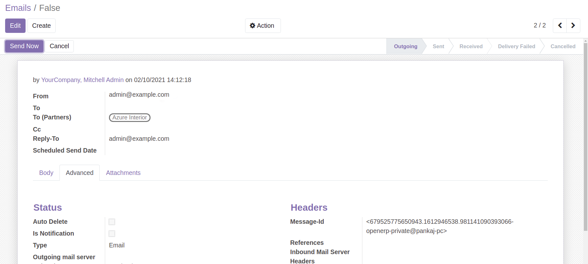

CRM: Outgoing Mail
This module is used to force the "From" email address to be the same as your outgoing email server. Reply-to will also be the same address the email is sent from.
This can be handy in situations where your users are user@domain1.com and you want to use common@domain2.com for all customer communications.
Features:
1. FROM Email: Sets the default "From" email to the same address you have in your outgoing email server.
